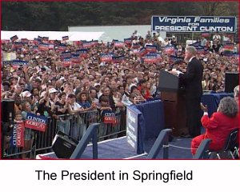

 On the Horizon
As we head into the final days
of the campaign, we need your help
energizing your community to
GET OUT THE VOTE!Call the Clinton/Gore office number
below to volunteer.Virginia Highlights
Clinton-Gore '96 Headquarters
1108 East Main Street
Third Floor
Richmond, VA 23219Phone: 804-649-1996
Fax: 804-649-2489
State Director: Wallace Williams
Virginia Democratic Coordinated Campaign
1108 East Main Street
Third Floor
Richmond, VA 23219Phone: 804-343-1996
Fax: 804-343-3642
Paid for by Clinton/Gore ’96 General Committee, Inc.